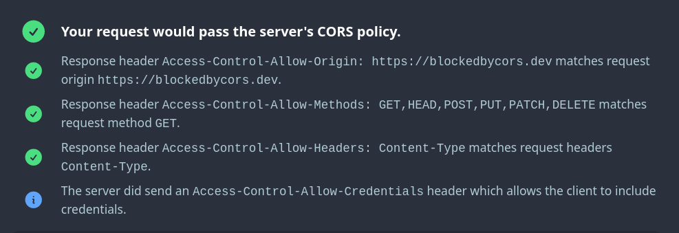

In my spare time I like to work on projects to solve problems I'm not able to find a solution for or simply out of educational purposes. Here's a partial list of what I've been building:
A toolbox and knowledge base helping you to identify and fix CORS related problems.
Save money by automatically shutting down your cloud resources when you don't need them.
A searchable collection of all services provided by major cloud providers like AWS, Azure, GCP, DigitalOcean and more.
A CLI tool that compares your AWS account's quota limits with the current number of resources to be able to request increases before running into a limit.
A Kubernetes operator that takes care of creating UptimeRobot monitors for your Ingresses and setting up public status pages, maintenance windows and alert contacts.
A collection of less popular features and tricks for the Python programming language.
A Python library to interact with the API of the CheckMk monitoring solution.
A web application that provides various calculators regarding the power consumption of all Raspberry Pi models.